Technically grounded designer with 5+ years of experience driving end-to-end delivery, leveraging data and user research, and streamlining complex AI-driven workflows in B2B SaaS and content management tools
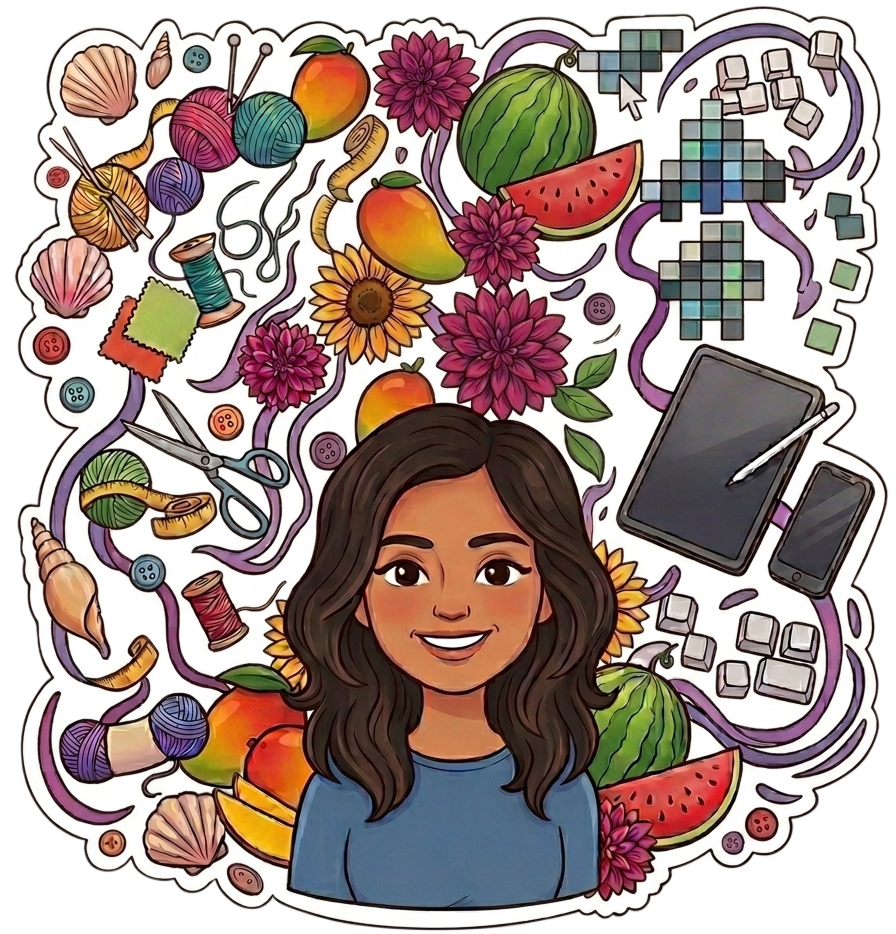


Contact
Rebuilding a decade-old video editing workflow to cut publish time in half
Streamline video create-to-publish pipeline and create a more intuitive workflow across the platform
Reduced time to publish by over 50% with successful and well-received beta release
Lead Product Designer & User Researcher, Worked with 1 PM and 3 engineers

The video editing workflow was one of the most complained about features in the plaform.
The page in Video Center where customers can upload videos, add metadata, and publish (what we call the "Video Edit page") is a relatively old piece of software. I wanted to redesign the video editing workflow in order to make this user interface more consistent with other Arc editorial applications, so that uploading and editing a video is faster and more intuitive.

Arc has made significant changes to the Video Edit page over time to add new functionality, but the fundamental user interface has not changed. And that user interface is inconsistent with our other Arc apps because Arc didn't even exist as an idea yet when it was first built.
The Video Edit page is where our customers spend most of their time within Video Center. The average visitor session is nearly 20 minutes.

We aimed to kill a few birds with one stone in this redesign:
- Make the Video editing UX more consistent with our editorial application's UX, so our users don't have the headache of adapting to inconsistent UIs to accomplish the same action in our different applications
- Leverage our design system components, so that in the future we can deliver new features more quickly on the Video Edit page and across the other asset creation apps as a whole.
- Address some long-standing UI pain points that have been brought up by customers over their long history with the product
- Emphasize recent piecemeal improvements that were shoe-horned into legacy experience that can now be effectively integrated into workflows
- All publish actions consolidated to streamline key desired outcome
Sneak peek of the final result
We got 70+ responses (read as: complaints) on a survey of our customer organizations.
We ran a survey across several of our customer organizations to hear from direct users their pain points with the legacy experience. We received 70+ responses from 10+ customer organizations. There was an overall negative opinion of the ease of use for the product and a strong desire for a full overhaul of the entire experience.

Some main pain points were:
- Lack of accuracy in selecting clip start and end points
- Too much scrolling to find key fields
- Too many clicks to get to the final publish
- No transparency for next required steps or the user's position in the process
The survey made clear that there were two main personas who frequented the Video Edit page.

We gathered click data and session tracking from Datadog
We utilized Datadog to collect click data and session tracking to determine priority workflows and break up the work into MVP/beta release, full feature release, and what was headed for deprecation.

Since the legacy UI was both archaic and convoluted, technical constraints were a large consideration at every turn of the work. Spikes needed to be investigated and backend logistics were heavy influences in deciding how each UI element was to be ported into a newly redesigned editing experience.
Also, since maintaining parity with our editorial application and leveraging as many existing components as possible were two main goals, fields and workflows that could be directly pasted in were also prioritized for MVP.

Our MVP aimed to target lower lift, highly used functionality

Key design decisions
- Tabbed format to organize related fields together and minimize scrolling
- Two-pane screen allowing metadata to be viewed side by side with the video player
- Front load all required fields for initial save so valid object can be created as quickly as possible
- Strong parallels to other applications in the platform to ease learning curve between products
Our goal was to have a useful enough MVP that our customers could try out for daily tasks
After an initial round of user testing with employees of our MVP from three different customer organizations, we received feedback to inform the full release with 1 to 1 parity with the legacy experience.
- Using similar structure to other apps is lowering barrier to entry for employees to work across several products
- We missed some key workflows when defining the MVP functionality: data isn't everything
- We need to use more video-centric terminology to keep the use cases separate
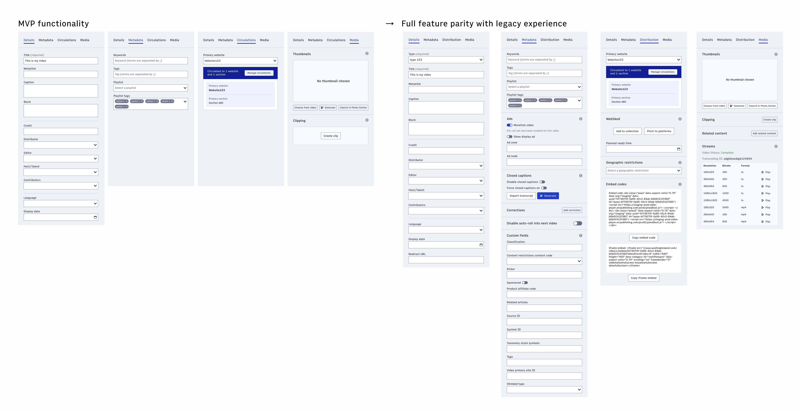
Our final solution helped cut time to publish by over 50%
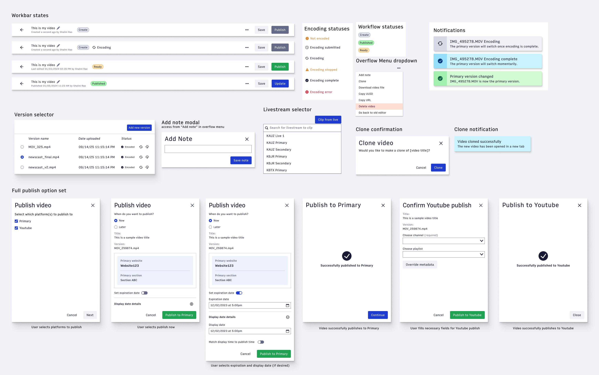
I had been asking for this for years, and seeing it through was incredibly satisfying
This was a long overdue and highly anticipated redesign both within our company's engineering team and our customers' organizations. Strongly positive feedback was received on both ends. I consulted with the lead front-end engineers who would be taking on the work and created development documentation with according acceptance criteria. Each component and field section was rounded out with empty, error, and filled states.
Some positive feedback from our customers upon beta release:
Prototyping a net-new audio product in Figma Make, from competitive analysis to shipped multi-phase roadmap
Increase platform's value proposition for accessibility, reader engagement, and cross-platform distribution by offering audio asset management
Expanded asset type offering to include audio, 259 daily users across 30 customer organizations
Lead Product Designer, Worked with 1 PM and 2 engineers
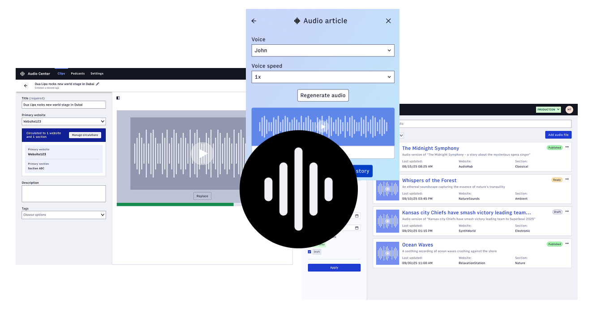
As demand for audio-based content grows, the platform aims to offer a deeply personalized experience where readers who prefer audio can consume content in a new modality.
With full platform support for the audio modality, we seek to attract a range of customers including:
- Enable newsrooms whose primary form of storytelling is Audio (radio broadcasters, podcasters) to bring that content to their site experience in the same way that video broadcasters do today.
- Enable newsrooms whose primary format is text to deliver audio experiences. Arc XP customers need a centralized solution to manage text-to-speech (TTS) audio articles and short-form audio clips
I used Figma Make to create a rudimentary initial mockup of an audio management system following our existing patterns for asset landing pages. This one prototype proved to be instrumental in getting leadership buy-in and informed much of the later design iterations.

Integrating previous POC work and all basic asset management functionality to define the critical path
Since this was an entirely new product offering, the critical path was defined to include all basic asset management functionality.

In the effort to further the efforts to provide a unified asset selection experience (with the potential future of fully consolidating all asset management products into one), we leveraged the tried and tested two-pane asset edit format that had been implemented for written stories and video assets.
There had also been previous POC work done by engineering to create a new audio player with integrated thumbnails to be used across all products. This work informed how each audio object would behave in different experiences.
From here, I designed the landing page where users could search for audio objects, which would then be used in a modal form to allow users in the editorial experience to add an audio asset to their written content.
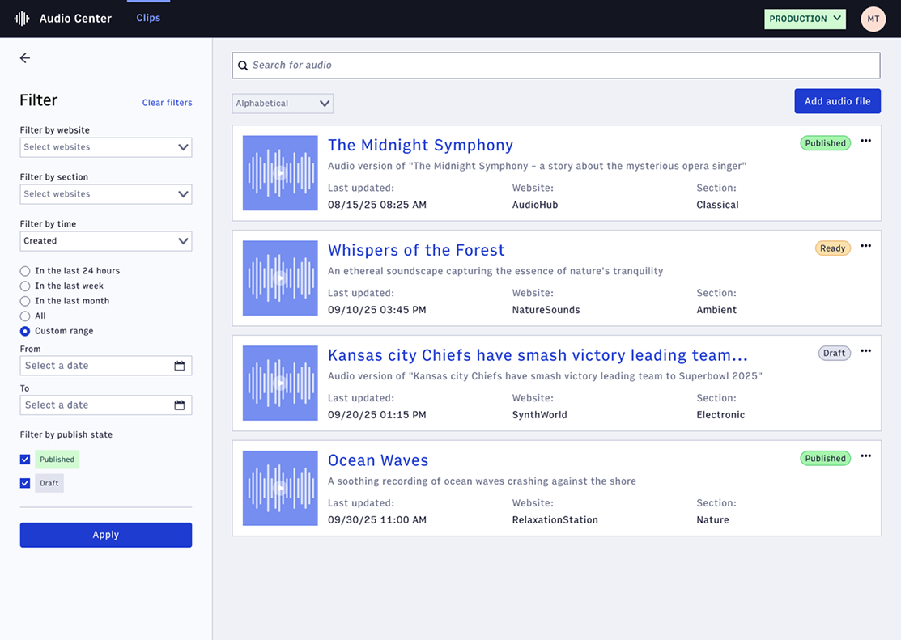
I created the edit page to parallel the asset edit experiences in other products, with a smaller number of fields and simplified view for the first release of audio modality support.

Enabling newsrooms to boost reader retention using audio modality through AI-assisted generation
The main goal for providing audio as an asset option was to enable newsrooms to leverage the audio modality to boost reader retention. Text-to-Speech (TTS) and consuming written content in an audio format is a burgeoning medium many platforms are using to combat reader churn.
There was already previous work done to integrate an AI Assistant into the editorial tool Composer that provided suggestions for metadata fields. This provided a landscape to add TTS functionality that could aid in the writing process.
There were a few design iterations to leverage the existing card design for audio objects. It demonstrated a need for a larger card design to be used in editorial applications and to leverage the functional thumbnail player.

From here, we evaluated how the audio element would fit inline in the editorial experience. Since there is still work to be done to investigate how child objects would be treated in a larger sense, the first iteration utilized the full size audio card.

Each form factor and display of the audio object needed its own card design
Each integration and presentation of an audio object required different information to be surfaced. The form factor of each card was defined by where the object would be integrated.

Outlining each state and UI element for engineer handoff
I prepared the work for our developers by crafting documentation with each relevant state and UI elements with the acceptance criteria to outline the expected behavior.

Using AI prototyping to think ahead into podcast management
There was an outlined future phase of work that would eventually allow us to support podcasts, as so many media organizations are creating to keep up with changing content consumption habits. I utilized Figma Make to think ahead on how a podcast management system would fit into the existing audio tool.

Designing an AI assistant from zero, across an entire platform.
Turn an open-ended mandate ("add AI, figure out what that means") into a shipped product feature that saves journalists time without taking control away from them
A native AI assistant panel, shipped in Composer and designed to extend across Arc XP's entire product suite, surfacing metadata updates, style guide feedback, and content opportunities as reviewable, reversible suggestions. Reached 85% acceptance rate across 184k suggestions over six months and 365k ARR.
Product Designer, Worked with tiger team of 3 designers, 2 PMs, and 5 engineers
The brief was intentionally vague.
The assignment came with almost no constraints. No defined scope, no existing user research on AI specifically, no roadmap. Just a sense that the market was moving and Arc XP needed to move with it.
A tiger team of three designers was given 2 weeks to answer a deceptively simple question: what should AI actually do inside Arc XP?
We started broad. Where do journalists, producers, and editors spend time on work that does not require their expertise? Where do stories fall short of organizational standards not because the author did not care, but because there was too much to keep track of? What tasks were being done manually that did not need to be?
The answer kept pointing to the same place: metadata. Tagging, SEO keywords, descriptions, related content, featured images. The work that happens around a story, not inside it. Time-consuming, inconsistently done, and directly tied to how content performs once published.
Over the course of one focused week, we moved from open ideation through dozens of possibilities and landed on a direction: a persistent AI assistant panel that would live alongside the content editor. From there we built a first high-fidelity prototype. The weeks and months that followed were spent going deeper: refining the interaction model, running user research, and expanding what the assistant could do and where it could live.
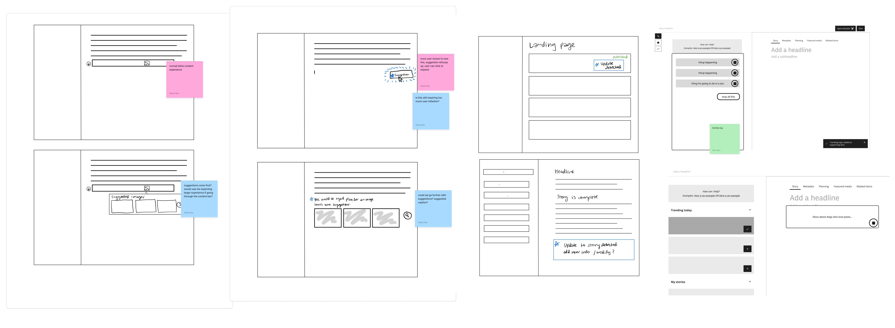
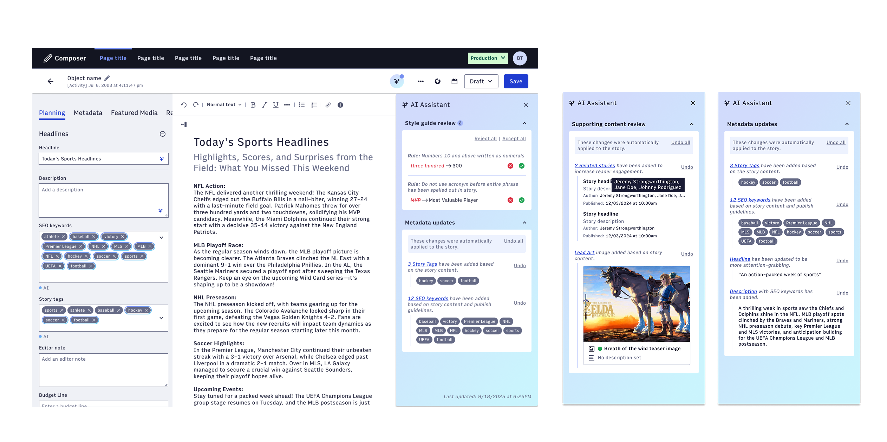
The panel as a first principle
The most important design decision we made early was spatial. The assistant would live in a side panel, not inline with the content. We needed to build as much trust with our authors as possible.
A tension kept surfacing throughout the project: journalists wanted help, but they did not want to open their story and find it changed. The panel gives the AI a place to exist without overstepping. It can do things, surface things, flag things. But the story body stays the author's.
After settling on the panel concept, I took on the problem of how field-level changes would be communicated within it. Specifically: how do you distinguish between changes that were automatically applied versus changes that are suggestions waiting for a human decision?
That distinction mattered more than it might seem. Some changes came from the organization's own configuration: required tags, mandatory keyword rules, standards that every story published through Arc had to meet. Those were not AI suggestions. They were organizational policy, automatically applied. The AI's own recommendations were a different category entirely, and they needed to read that way.
If everything looks like an alert, nothing does. The visual language we landed on made auto-applied changes feel like a record: something that happened, that you could undo, that was logged. AI suggestions felt like a recommendation waiting for a response.
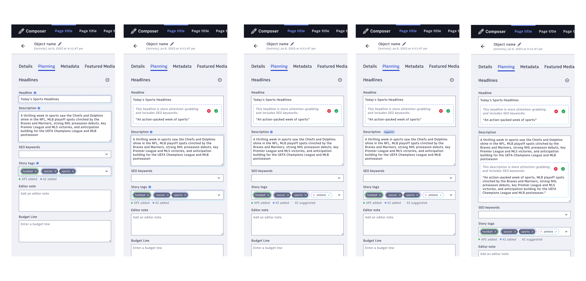
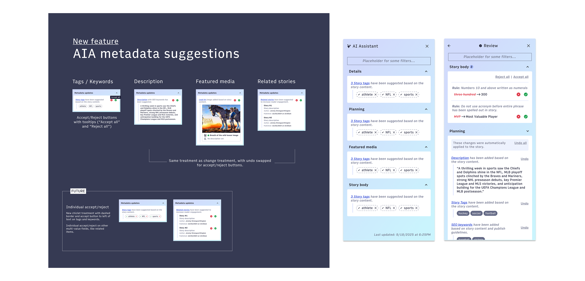
The research confirmed that trust and verification were the key for writers
Once we had a working concept, we ran usability sessions with third-party participants recruited via Respondent. I was part of running and observing those sessions.
The findings reinforced what we had suspected but also pushed us further. Users were not opposed to AI doing things. They were opposed to AI doing things they could not see, trace, or reverse. Across participants the ask was consistent: surface everything as a suggestion, make every action undoable, and keep the history visible, not just from the current session, but from previous sessions and from other collaborators working on the same story.
One finding that stuck with me: users wanted to come back the next day and still see what the AI had suggested. The idea that suggestions would evaporate on page reload felt unacceptable. They wanted a record, almost like a paper trail. That shaped how we thought about the panel's home state, the history footer, and how accepted or rejected suggestions were logged with timestamps rather than simply disappearing.
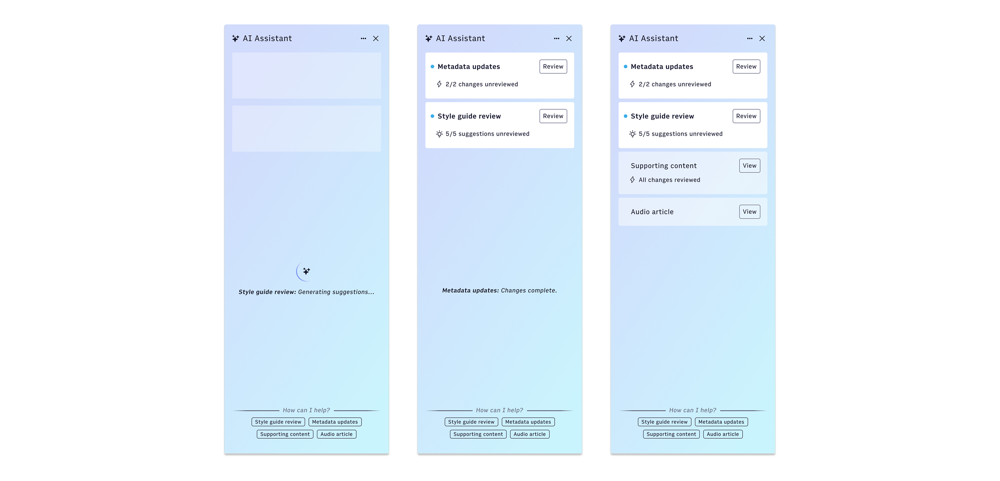
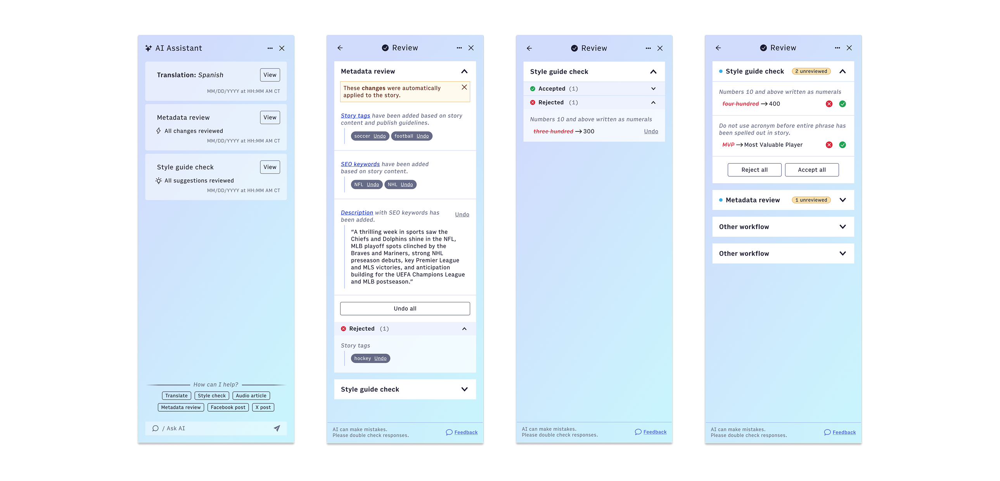
The assistant could do more than just suggest changes
Beyond metadata, the panel also handled what we called supporting content: related stories surfaced from Arc's vector search, and lead art suggestions pulled from the story's subject matter.
I worked on how these would be presented in the review flow, specifically how to show an AI-suggested image in context without making it feel like the AI had made an editorial call. The suggestion had to feel like a recommendation from a well-informed colleague, not an autonomous edit.
The accepted and rejected states were as important as the suggestion itself. When an author rejected a lead image, that rejection needed to be visible and recoverable: not punitive, not permanent, not lost.
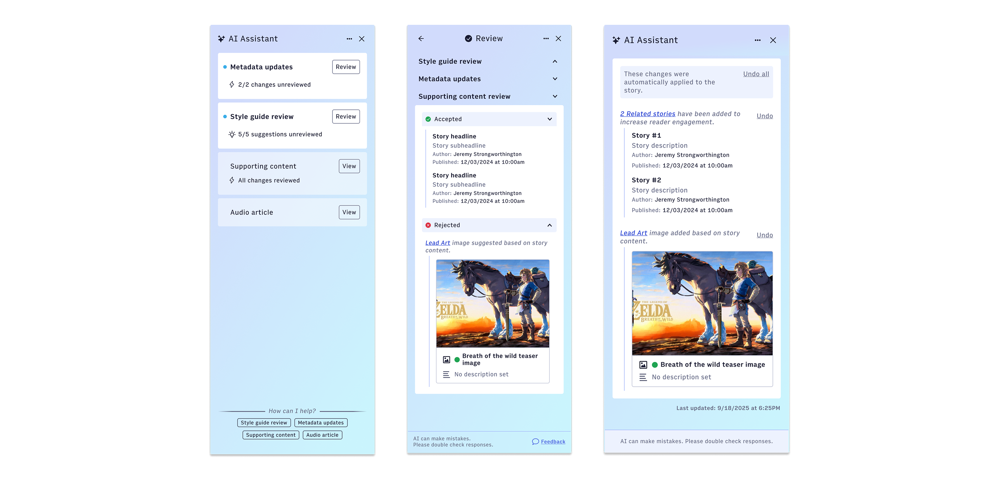
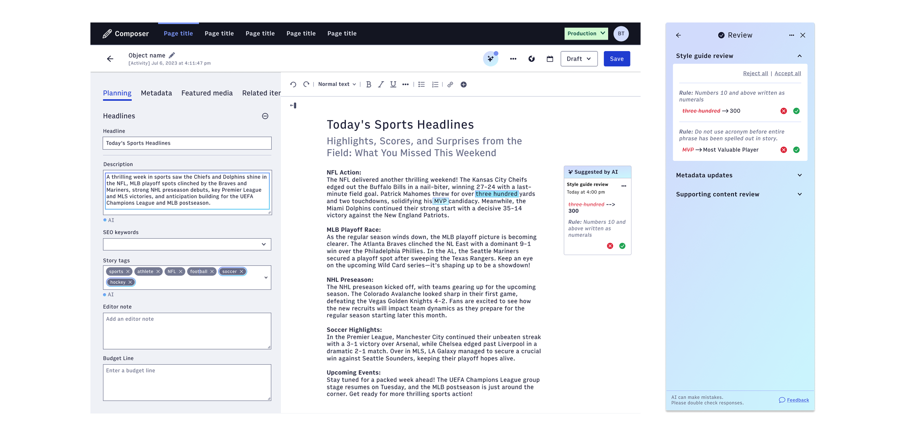
Extending the assistant beyond Composer into my other video product work
Composer was where the assistant launched, but the design work always asked a broader question: if this works here, what does it look like everywhere else?
I took on the exploration of what the AI Assistant would look like inside Arc XP's Video Center, the tool broadcasters and video producers use to manage and publish video-on-demand content. The surface is different: instead of a story body with text fields, you have a video with metadata fields and a timeline. But the underlying logic held.
Producers were spending time on the same category of work: filling out titles, captions, blurbs, tagging clips. The transcripts being generated by Arc Intelligence's video vectorization pipeline were already available, ready to be put to use.
I designed an adapted version of the same panel for this context, now surfacing content opportunities specific to video: a suggestion to generate an article draft from the video transcript, a clip identified from the footage worth pushing to social channels, and metadata updates applied from the transcript and reviewable through the same accept/reject flow used in Composer.
These explorations were brought to high fidelity and presented to leadership to show the assistant's adaptability across Arc XP's product suite. A related thread I explored separately was text-to-speech, looking at how the assistant could generate an audio version of a story. That work fed into a different product area and is covered in the audio case study.
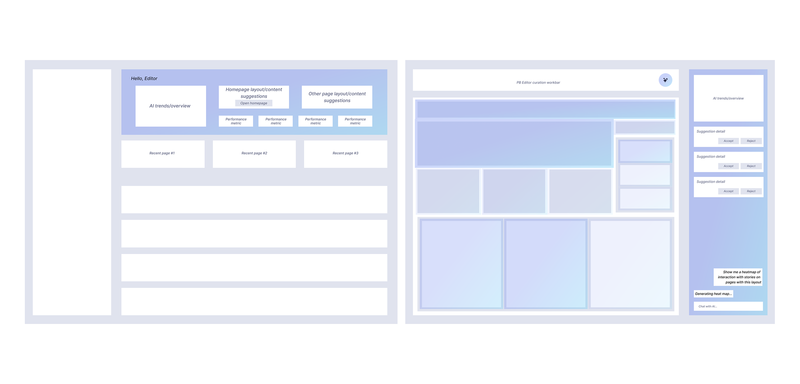
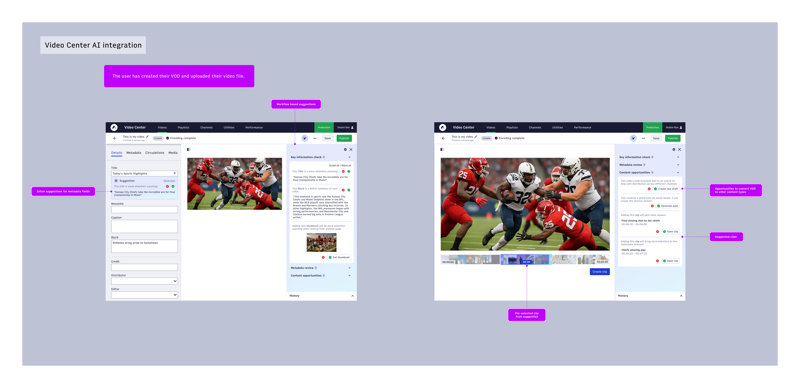
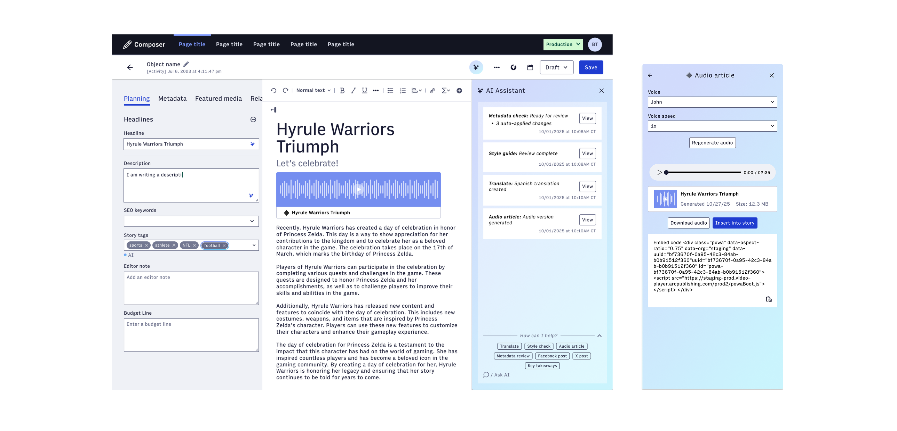
As of May 2026, the AI Assistant has been adopted by 30 customer organizations with 259 daily active users.
The Composer version of the AI Assistant shipped to a closed beta in late 2025 and reached general availability in early 2026. The released functionality included metadata review, style guide checking, supporting content suggestions, and the full accept/reject/undo model we had designed around the research findings.
The video explorations were not yet on a finalized roadmap when I was laid off, but the design language, the panel architecture, and the model for communicating changes versus suggestions were built to extend. The components were designed to be adapted, not rebuilt from scratch.
What I came away with was a clearer sense of what it means to design for trust in an AI product. The hardest part of this project was not the interface. It was the model for how humans and AI share a workspace. Every decision about what the AI does automatically, what it surfaces as a suggestion, how it records what happened and makes that history legible: those are trust decisions before they are design decisions.
Crafting a composable card component to accommodate varying asset form factors
Create a card component that can accommodate all use cases across 10+ products to unify the landing page views cross-platform
A fully composable card component with swappable content areas and flexible layout
Lead Designer, Worked with 1 engineer

In our third iteration of our design library, I endeavored to create one card component that would span all our products' use cases while maintaining a cohesive look and feel. With nearly a dozen products all utilizing a card component of some form in their landing pages, there was a task at hand to devise a comprehensive layout that would accommodate a wide range of information and size constraints.
To begin, I audited all existing cards used across our 10+ products.
Arc XP has had several designers over a decade all working on each product independently with little collaboration. As each product evolved, so did their design needs. With no design system at the beginning, this resulted in each product having different card displays with different components.

There was a concrete list of data points and types to be displayed on a card, which required some amount of prescription to create a unified layout and designated placement for specific content elements.

From here, it became clear that there were two main form factors of cards: a single row card and 2+ row card.

I made the final decision for a fully composable card component that prioritized flexibility and consistency.
Key design decisions
- Title and overflow menu have fixed positions
- Each data point is composable and swappable
- Single row card rounded corners to match use cases on search results page and table rows
- Optional extra rows and footer with swappable content areas

The swappable nature of the card component allowed for easy customization and allowed designers to create unique variations while maintaining consistency. They could build the specific data point display they needed while adhering to the overall design system.
I asked my fellow designers to use the component to match their existing use cases in their respective products.
I provided them with the same examples I started out with and asked them to recreate them using the new card component and log their difficulties.


I received great feedback from my design team and engineering partners about how much time and effort this component saved.
Every designer reported a significant reduction in design and development time, and each release moving forward utilized this new component, saving engineering resources and reducing time to delivery.
Designing within hard constraints to give enterprise publishers their first view into video performance data
Surface video performance, monetization, and error data for enterprise publishers without requiring any development work on their end
Shipped to closed beta across 6+ enterprise clients, moving analytics support burden into a self-serve dashboard
Lead Product Designer & User Researcher, Worked with 1 PM and 1 engineer
Arc XP's publishers and broadcasters had no way to understand how their videos were performing.
Editors were flying blind on engagement, ad ops teams couldn't diagnose monetization issues, and engineers were fielding support tickets they shouldn't have been. Clients across every segment were asking for the same thing: a simple dashboard that showed them what was working and what wasn't, without requiring any development work on their end.
The ask wasn't glamorous. There was no existing analytics surface to build from, the data pipeline was still being validated, and the engineering brief was explicit: don't design anything. Replicate the Datadog output, organize it into the right buckets, and ship it fast. The goal was to get real data in front of real clients before committing to a full design investment.
I wanted as much background from our customers as possible
Before touching Figma I spent several months in customer interviews. I talked to video producers, ad ops managers, and business stakeholders at our biggest customer organizations. I ran a survey that collected responses from 37 participants across publisher and broadcaster segments.
Three buckets of need emerged from every conversation: Engagement, Monetization, and Errors. Every client framed it differently but landed in the same place.
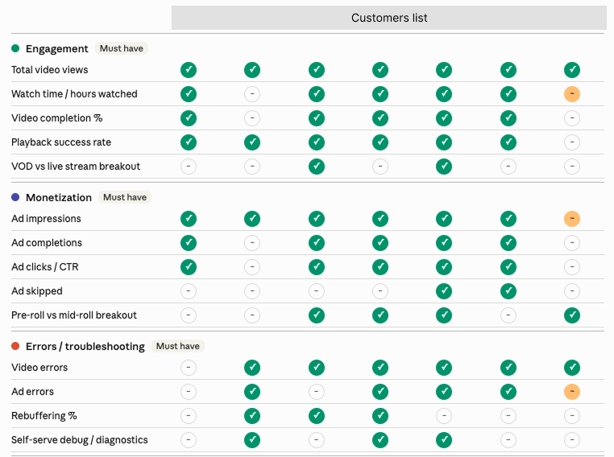
They weren't asking for a sophisticated analytics platform. They were asking to stop being in the dark.
A few specific patterns shaped the design decisions that followed. Multi-site publishers needed to drill down to individual sites, since aggregate views across all their properties were too broad to be useful. Clients wanted to rank videos by performance and click through to a single video view. And nearly everyone wanted the monetization section to link out to their existing ad partner dashboard rather than replace it.
The whole point was that there was no actual design needed, just organization
The design brief was deliberately minimal. Another team had already shipped a page that pulled raw Datadog output onto a screen with no styling. The directive was to do the same thing for video analytics: use whatever visualization Datadog could produce out of the box, organize it according to the three buckets, and get it in front of beta clients.
This wasn't a failure of ambition. It was a deliberate call to reduce risk on a project where the data pipeline itself was still being validated. If the charts ended up as a wall of numbers, that was fine. The priority was confirming the data was accurate and the use cases were right before investing in visual polish.
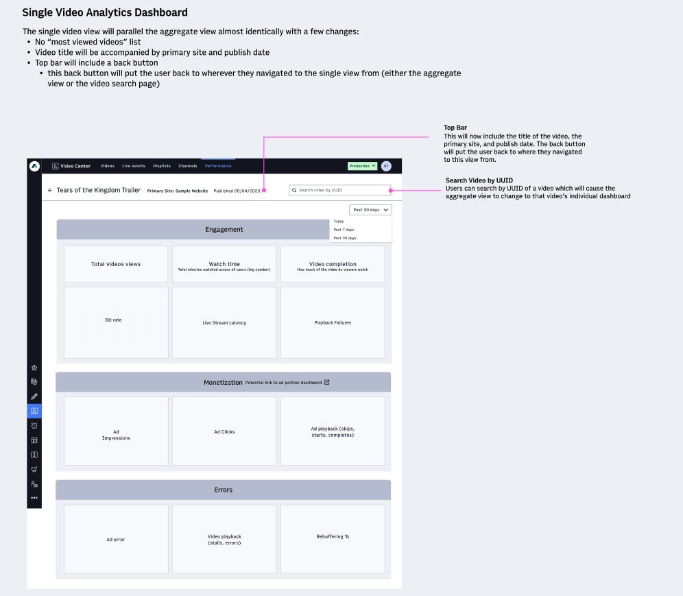
What made this harder than it sounds: engineering couldn't test with real data until the Mux license was fully provisioned, which meant I was designing to placeholder data while simultaneously fielding questions about chart types, scale definitions, and interaction specs that hadn't been settled yet. The scope kept growing. What started as "put the data points in the right places" became a multi-month project involving beta planning, client demos, engineering alignment, and multiple rounds of stakeholder review.
I came up with a structure that met the needs of the three different target users
The final structure follows the three-bucket framework that emerged from research.
Three-bucket framework
- Engagement sits at the top with the metrics clients cared about most: total video views, watch time, and video completion percentage
- Monetization comes next, with ad impressions, clicks, and playback breakdowns
- Errors sit below that, covering ad errors, video playback stalls, and rebuffering percentage
A most-viewed videos table anchors the bottom of the aggregate view, stack-ranked by total views, the number one request across every client interview.
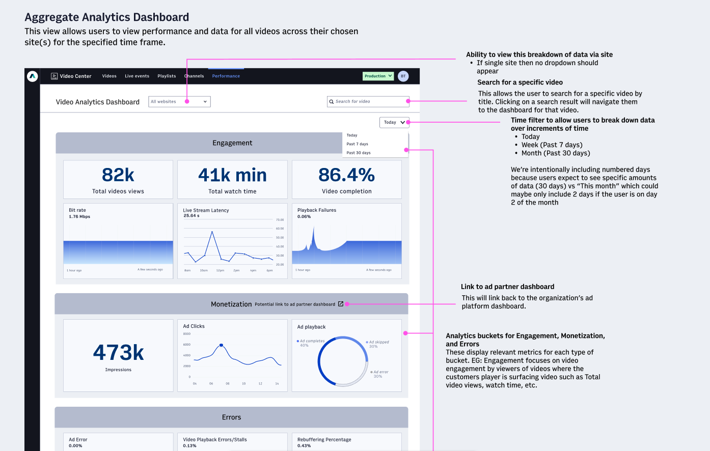
The single video view mirrors the aggregate layout almost exactly, with the video title, primary site, and publish date surfaced at the top so editors can confirm they're looking at the right asset.
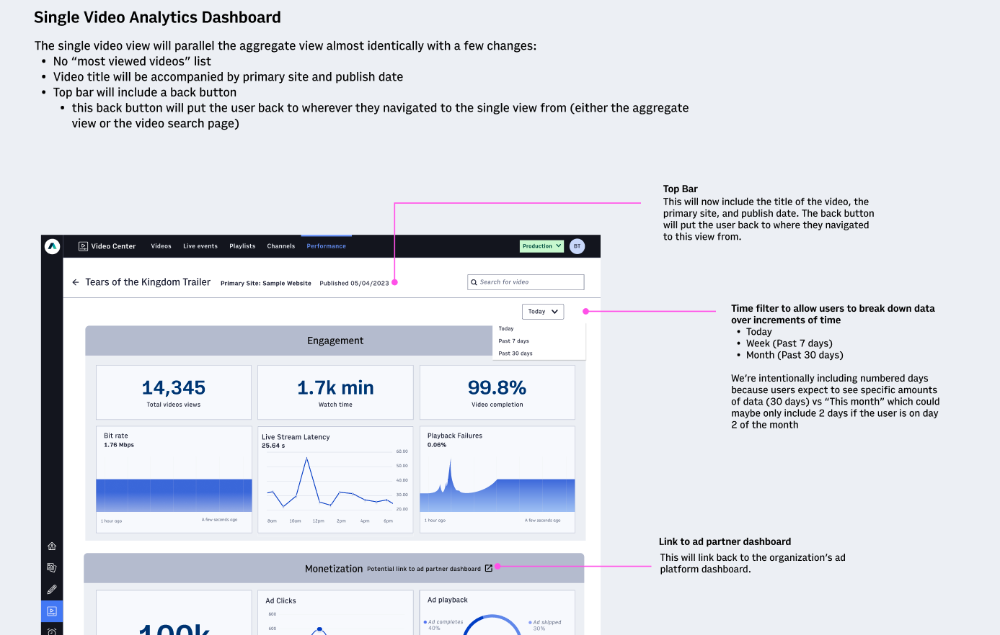
A website filter and time range selector sit at the top of both views. For multi-site publishers, the website dropdown was a non-negotiable requirement from research. The time range options (Today, Past 7 days, Past 30 days) came directly from how clients described their actual workflows.
The monetization section includes a persistent link to the client's ad partner dashboard. Clients weren't asking Arc to replace Google Ad Manager or their existing analytics stack. They wanted Arc to surface the top-line numbers and get out of the way.
I would have done more with the visual design if I could
The brief said no design. I followed it. But given more runway, this is where I'd take it.
The core structure would stay the same: the three-bucket layout, the aggregate and single video views, the most-viewed table. What would change is everything visual: tighter typographic hierarchy to make the big numbers land harder, color used intentionally to separate healthy metrics from error states, and chart types chosen for what the data actually needs rather than what Datadog provides out of the box.
The empty state experience would also get real attention. The v1 shipped with placeholder labels and blank chart areas while data loaded. For clients seeing the dashboard for the first time during a beta demo, that created confusion about whether the tool was working. A proper loading state and empty state would have made the beta feel more credible from day one.
It was still received well from our customers, so it's still a win in my book
The dashboard shipped to a closed beta with select publisher clients. Positive feedback from the beta informed continued development, and the feature moved toward general availability as part of Arc XP's core offering. Clients who had been routing analytics questions through TAMs and support engineers gained a self-serve path to the data they needed to run their video and ad strategies.
Gamifying music education to improve theory retention in children and adults
Create teacher-facing interface of music theory education gamification app (Noteful) to expand into classroom applications
Rebranded color and type system for Noteful and fully designed teacher dashboard
Product Manager & Co-designer, worked with 1 engineer, 1 other designer, and 1 researcher

I worked with a local startup called Noteful that is building a mobile app aiming to make learning music theory engaging and fun for younger students.
I acted as product manager and client liaison, which required me to maintain our project vision, establish deadlines and interim deliverables, maintain our client relationship, and oversee our design, research, and implementation progress. In addition, I contributed to our interface designs, research process and biweekly presentations. I was also the main decision maker and advocate for both our client's needs as well as our users' needs. Since the startup was so new, there was a lot of room to strategize with the founder about the vision for the company and how our product would align with their goals.
Background
Noteful is a Pittsburgh-based startup created by a music teacher frustrated with the lack of flexibility and engagement with current music theory teaching methods.
The founder, Becky, has been teaching music to students of all ages for over 25 years and found that both her teacher peers and her students were frustrated with the traditional pen and paper methods of teaching and practicing music theory. She decided to develop a music theory game app (taking inspiration from Duolingo) to make practicing key theory concepts and exercises more enjoyable for students of all ages.

The foundation of all content on the app is Becky's time-tested curriculum called "FRESH Theory."
FRESH Theory is an acronym for Form, Rhythm, Ear training, Staff, Harmony, and musical Terms. This will come up many times throughout the process of designing this interface, and will act as the guiding force for the information architecture and color branding later on.

Opportunity
Music teachers are spread too thin to manage all their students while also keeping their theory education engaging and fun.

Solution
Summary Dashboard
The overall dashboard page offers teachers access to easily digestible information about student performance and assignments. Teachers have the option to toggle between different classrooms and student views.

Fresh Theory Mastery Widget
The FRESH Theory Mastery widget is an essential component of what makes the Noteful teacher interface different from other classroom management systems. The specificity of the data analytics as it applies to the core foundation of the Noteful game and curriculum cannot be replicated on a different platform.

Assignment Details
On the individual assignment page, teachers can view all questions and lessons within an assignment they created as well as how each of their students scored. They have more freedom to sort and manage the information to fit their needs using the different sorting tools and filters.

Gradebook
The gradebook page shows grades for each student by lesson. It offers a complete history of a student's performance since joining the class. Teachers can search by a variety of keywords including student name, assignment name, lesson name, keywords in assignment or lesson name.

We've set Noteful up to be the first music-oriented classroom management system of its kind that every music teacher will view as an essential part of their toolkit.
Teachers can now leverage the autograded assignment data to make decisions on how they structure their lessons, whether they're 1:1 or in a classroom setting. They can see trends in student performance as well as callouts for specific topics and questions the students are struggling with.
Visual Design
Since the mobile app was still very much in development, there was no type system in place and only a single color swatch for a primary color. Since the dashboard is meant to be viewed in either laptop or tablet screen size, the typeface needed to minimize eye strain, especially for older users. We also modified the original primary color chosen by the Noteful team.

FRESH Theory is the foundation of all the content within the Noteful mobile app and the color system heavily impacts the information architecture.
The FRESH Theory colors are used to categorize questions and lessons, and help students keep track of what concepts they're working on. However, the original system created by the Noteful team had accessibility issues, as well as heavy overlap with necessary system colors such as success and error flags. We aimed to keep the playful personality of the app, but with more consideration for accessibility, higher contrast between the colors, and the creation of room for other system colors.


The Process
Research
Throughout the duration of the project, we conducted 6 rounds of interviews and user testing with over 25 classroom and private music teachers. The insights gained from each round directly informed the design decisions made in our low, mid, and high fidelity screens.
Contextual Inquiries
We dove into current routines and workflows relating to teaching music theory during lessons, assigning homework, progress tracking, curriculum formation, student roadmaps, and student motivation. We also interviewed students to evaluate how theory plays into their motivation to learn music and the current pain points they had with reaching personal goals, teacher-student relationships, and control over their own learning.

Card Sorting
We came up with a list of possible metrics teachers do or do not have access to, as well as data our client told us the app would collect. We let teachers rank the order in which they would prioritize each metric to give us a better idea of what information they're missing in their current teaching styles.

Competitive Analysis
We looked into existing classroom management systems (Canvas, Khan Academy) and other music theory learning platforms (musictheory.net, Tenuto) to evaluate why teachers weren't using any tools already to solve their pain points. The first problem we found was the lack of flexibility and control the teacher had over how they wanted to manage their class and assignments. The second problem was that classroom management systems only exist for the transfer of assignments between teachers and students; there is no pre-generated content available for the teacher to utilize.
Defining the Vision
Storyboarding and Speed Dating Interviews
Using a Crazy 8 session, we created 13 distinct storyboards of use cases for a music theory teacher interface. The use cases ranged from a messaging system that allowed students to ask quick questions outside of class to fully customizable roadmaps the teacher and student would collaboratively create.
We then conducted speed dating interviews, where we gave each teacher only a few minutes to get acquainted with each storyboard and give their overall impressions. This helped us refine our wide scope of ideas into the main 4 that teachers found most helpful and stated they would most likely adopt.

Prototype Iteration
Low Fidelity

1. Private teachers need individual student views more than a group summary dashboard
There is a drastically different use of the dashboard between private teachers who teach 1:1 and classroom teachers who are teaching 20–30 students at once. The dashboard would need to show summary statistics on a student by student basis, allowing the teacher to toggle between their students to see their progress.
2. Teachers need familiar representations of important data otherwise the purpose of the visualizations is lost
A big piece of feedback we got was that some of the visualizations weren't intuitive and were almost jarringly unfamiliar. While we want to simplify data and highlight irregularities, we should also keep the dashboard similar to what teachers are used to interacting with elsewhere.
Mid Fidelity

1. Provide holistic assignment information in one place
As we saw when we tested our assignment page, teachers believed they would see all relevant assignment information on that page, including the questions most struggled with and the noteworthy scores. This showed us they value having all the information in one place even if it makes the page more crowded.
2. Fix the gulf of execution for navigation between pages and views
Specifically, teachers expected the navigation bar dropdown to show a roster of students rather than being used to toggle the views from classroom to individual students. They also thought that clicking an individual student's name would change the dashboard to that student's individual view. We need to be more mindful of the multiple different ways a teacher can accomplish the same task.

Crocheted an elephant for a friend

Sewed some foldable nylon bags (Baggu Dupe)

Knitted a scarf for the first time ever

Learned how to arrange flower bouquets

Learning how to do digital art using Procreate

Learning how to do mehendi (aka henna)

Started to garden - grew my own tomatoes and peppers

Grew my own basil to make homemade pesto

Learning how to mend torn clothing (reduce waste!)

Learned how to ski after college

Started thrifting vintage Christmas village

Embroidered Sokka's boomerang (from Avatar)